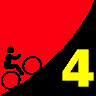
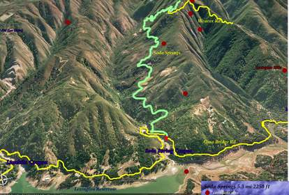

|  |
2009 Low-Key Hillclimbs Week 4: Soda Springs 24 Oct 2009 |
|  |
| Aerial photo of Soda Springs, courtesy of Stanford Cycling |

Soda Springs road climbs from the shores of the Lexington Reservoir, climbing the northwestern slope and ridge of Mt. Thayer near Mt Umunhum before ending, for most of us, at a gate marking the entrance to a private road. All too rarely visited by local cyclists, this one's a challenge. While lacking any of the brutal slopes the Low-Key series loves, this year as much as any, it's nevertheless the most continuous climbing of any single public road in the Bay area (to the awareness of your humble webmaster; Diablo North-Gate being two roads).
We climbed Soda Springs in 1997 and in 1998. The Low-Key records are Tracy Colwell's 1997 time of 30:03 and Laura Stern's 37:25 from 1998. Can anyone beat these times this year, over a decade later? I think so. Just watch out for the kitty crossing the road! (and the wild pigs!)
Our insurance demands it: helmets are required. Sorry kids, no exceptions!
USA Cycling rules do not allow ear plugs. We don't think it's a good idea either. So for safety sake, please leave both ears open during all Low-Key events!
Trailers pulling boom boxes are fine, however.
Registration is the usual time (9:15 to 10:00), at the parking lot about a mile north of Soda Springs Road on Alma Bridge Road. A Google Map is here.
To ride there from Los Gatos, you can take the Los Gatos Creek Trail to Alma Bridge Road, then turn left and ride to the parking lot. Driving, take the Alma Bridge exit from Highway 17.
| stats | 5.35 miles, 2368 feet, 8.4% |
| format | mass start |
| time | reg 9:15 - 10:00 start 10:10am |
| coordinator | |
| aerial view | Stanford Cycling (lower) Stanford Cycling (middle) Stanford Cycling (upper) |
| route profile | Motionbased profile |
| weather | Weather Underground Weather Bonk |
| registration form |
PDF release form |
| entry fee | $10 voluntary donation free for juniors 2 free for volunteers free for coordinators |

{kind=link}
{kind=link}
{kind=link}
{kind=link}